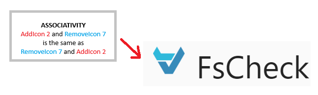

<!DOCTYPE html> 
<html>
<head>
	<title>Mike's Blog</title>
	<meta http-equiv="Content-Type" content="text/html; charset=utf-8">

	<!--The file below imports claro/document/gridx/rtl/dojo css files-->
	<link rel='stylesheet' href="https://oria.github.io/gridx/build/gridx/tests/support/common.css" />
	<script type="text/javascript" src="https://oria.github.io/gridx/build/dojo/dojo.js" data-dojo-config="async: true"></script>

	<!--link rel="stylesheet" href="gfxClaro.css"-->	<!--(for overrides)-->
	<link rel="stylesheet" href="https://trivedienterprisesinc.github.io/ui/2024/form/gridx_Styling/common.css">
	<link rel="stylesheet" href="https://trivedienterprisesinc.github.io/ui/2024/form/gridx_Styling/gfxGridx.css">	<!--(for customizations)-->

<!--BEGIN Frm related + local assets-->
	<style>
		fieldset		{ border: 1px solid; margin: 1em; padding: 1em; }
		legend 			{ font-weight: bolder; font-size: larger; }

		#result			{ background-color: white; }
		#result th		{ font-weight: bolder; }
		#result .hilite	{ background-color: #fd8; }

	.dijitDialogPaneContent {
	    width: 800px !important;
	    height: 600px !important;
	}

	.makeYellow		{ background-color: #ffa; }

	.claro html, body{
	    background-color: rgb(253, 245, 230);
	    background-image: url("./assets/fake-luxury.png");
	    background-repeat: repeat;
	}
	.gridx {
		width: 800px;
		height: 400px;
	}

	</style>

<script type="text/javascript" src="https://trivedienterprisesinc.github.io/ui/2024/form/gridx_Styling/commonAux.js"></script>
<script type="text/javascript" src="https://trivedienterprisesinc.github.io/ui/2024/form/gridx_Styling/FrmMngrExt.js"></script>
<script type="text/javascript" src="https://trivedienterprisesinc.github.io/ui/2024/form/gridx_Styling/pvDlg.js"></script>
<!--END Frm related assets-->

<script>
require([
	'dojo/parser',
	'dojo/on', 'dojo/dom', 'dojo/mouse', /*@mbi'dojo/dom-Class',*/
	'dojo/_base/Deferred', 'dijit/Tooltip', 'dijit/Toolbar', "dijit/Menu", "dijit/MenuItem",
	'dijit/form/Button', "dijit/form/ComboButton", 'dijit/form/Select', 
	/* frm related */
    "dojo/_base/lang", "dijit/registry", "dojox/form/Manager",
	'dijit/Dialog',
	'dojo/domReady!'
], function(parser, on, dom, mouse, /*@mbidomClass,*/ Deferred, Tooltip, Toolbar, Menu, MenuItem, Button, 
	    ComboButton, Select, lang, registry, Mngr, Dialog){

	window.showFrm = function(){
	    myFrmDialog.show();
	    var frm = registry.byId("form");
	    frm["disable"]();
	}
	window.editFrm = function(){
	    var frm = registry.byId("form");
	    frm["enable"]();
	}

	const gfxCreateBtnHandler = (e) => {
	    myFrmDialog.show();
			(registry.byId('frmTBpv')).set('disabled', true);
	    frm["enable"]();
			alert('createBtnTibbie');
	}

	var gfxCreateBtn = new Button({
		label: 'Create',
		iconClass:'gridxCreateIcon',
		onClick:gfxCreateBtnHandler
	});


	testFetch = function(){
						window.runFetch('fetchPVs');
	};

	parser.parse();
});
</script>

</head>

<body class='claro'>
	<h1 class='title' tabindex='0' onfocus='this.style.color="blue"' onblur='this.style.color=""'>
Mike's Blog
	</h1>

<div data-dojo-type="dijit.form.Button" data-dojo-props="onClick: location.href='articles.html'">Articles</div>
<div data-dojo-type="dijit.form.Button" data-dojo-props="onClick: location.href='about.html'">About</div>
	
  Assets:<br>
  <ul>
    <li>Curr ver (Feb 11) uncommented w/core fns embedded 2 gist</li>
    <li>Curr ver (Feb 11) reduced (no console debgs) for inclusion</li>
    <li>Gif of debug stmts, freeze 4 details or go 2 end & scroll up 2 see outpt</li>
  </ul>
<hr>
  <br>
	
	<center>
	<h1>PBT: Developers must NOT write tests</h1>
	<i>or,</i><br>
	<h2>Hands On: Using FsCheck to test a Windows App's UI</h2>
	</center>
<p>
Every once in a while, something new comes out of the world of Functional Programming (FP) which 
	takes even seasoned developers absolutely by surprise.
<p>
Here's the typical reaction from (even a Senior) developer, one with some FP exposure:<br>
1) The developer will read something and say <i>"What?"</i>  Then he'll go silent and glassy-eyed.<br>
2) After a few more minutes of reading, the developer will emit a low whistle.<br>
3) Finally he'll say: "How is that even <i>possible</i>?
<p>
I felt that way when I first read about FSharp Type Providers (see this, this and this).  
	More recently I felt the same emotions when I encountered Haskell QuickCheck.

	<p>
<h3>Behind the Matrix: The world of FP</h3>
The OO programmer asks: "Why so many different definitions of Functors?"<br>
"And why do I need Functors at all?"  When he's told "They are already 
there and you are already using them, you just don't know that they <i>are</i> FUnctors."
<p>
The problem is that FP is almost strictly in the Academic world today (and also in use 
by companies like Micorosoft/AWS but again in their Research departments).<br>
Academics will give you thorough definitions and try to include all rules and properties.<br>
Academics also have exposure to all facets of a concept, so they will tend to describe it from 
their own subspeciality and perspective.  Which is why there are so many different definitions 
for FP concepts, most of them accurate.
<p>
To make the difference clear, please allow me to offer an illustration:<br>
Say you are doing pair programming with someone named <a href=''>Bartosz</a>, 
<a href=''>Tom Petricek</a> or <a href=''>Rich Hickey</a>.<br>
The two of you are working on a simple CRUD app in a large closure which looks like this:<p>
	<code><pre>
   static void Closure = fun (params -> 
	Client thisClient = getCli(params);
	CliLocation thisLoc = 
		Locations
		.filter(thisClient)
		.toList();
	CliOrders thisCliOrders = 
	Orders
	.toMap()
	.stream()
	.forEach( o:order -> itemPriceAfterTaxes(o));
   );
</pre></code><p>
Quite straight-forward, correct?  You are just adding some business logic updates.<br>
Suddenly the FP guy next to you goes "Heh heh."<br>
	You look at him inquiringly.  <br>
	He says: "You know what?  The list lengths of ClientOrders will be the same as that of the ClientLocations."<br>
	"What?" you ask.  "What do those two things have to do with each other?"<br>
	He'll ask you to check it with a debug statement.  You are intrigued.  You add the debug statement 
	and it's true: both lists have 531 elements.<br>
'<i>This is insane</i>,' you think.<br>
	"But the orders have nothing to do with the locations," you protest. <br>
	"Please explain," you plead, "first <b>why</b> they're the same; and secondly 
	how did you <b>know</b> that they were going to be the same?"<br>
And he'll tell you something like "They are both Functors in the same closure, so the 
	XX Law (or the YY property) applies."  <br>
	And you go, "Whaaaaaat?"
	<p>
You see, when you or I see the Lamda, we see a Function, a Method, a Piece Of Code.  The 
FP guy sees all that we see, and then the glyphs on the screen drop (like in The Matrix) 
and then he sees what's <b>behind the code.</b><br>
To him, the Lambda is the Lambda of Lambda Calculus.  Mathematical rules and properties apply.

	<p>
<h3>No Category Theory needed</h3>
Here is the crucial point: you DO NOT need to see what the FP guy sees behind the Matrix.
You can use the QuickCheck library <b>without</b> a thorough grounding of Category Theory or 
	FP concepts like <s>Monads</s> Burritos.  This guide will show you how.
<p>

<h3>Avoid the heavy Lifting</h3>
In this article I am assuming zero FP knowledge.  You might be working in 
C# and using the FsCheck dotnet library, or any other flavor.  <br>
I will show 
you how to create a Model of your DSL and use FsCheck to autoGenerate tests.

<h3>What it is</h3>
	QuickCheck is a Haskell library which allows you to generate hundreds, even thousands of random 
tests.  You just set it up, give it a property to test and it's almost like ten mini developers in the 
compiler begin to write and execute tests immediately.<br>
<a href=''>John Hughes</a>, one of the original developers of QuickCheck says: "Don't write tests.  Generate them."
<br>  If you're like me you'll be quite happy to front-load the effort of learning a new testing framework if the long
	term benefits include not writing tests at all!
	<center></center>

<br>
<h3>Hands on toot</h3>
  No heavy stuff.  You don't need to, but you can
<br>
<h3>Model Based</h3>
  Easy to reason about, use Spreadsheet txt + link; use Hughes' img + link, Easy to connect to app's functionality.

<br>
	The developers at Row Zero formerly worked at AWS and used tools like QuickCheck to formally verify the S3 filesystem.<br>
	Here is how they define Model-Based Testing in their excellent PBT <a href='https://grantslatton.com/rowzero-property-testing'>article</a>:<br>
<i>
Blackbox reference-model testing is the best and most powerful method. This involves testing the real implementation of something against a reference model. Typically, the reference model will be much less efficient than the real one, or lacking some functionality.
	<br>

An example of this is how we store the values of the cells in the spreadsheet. You could imagine a solution that is just a giant hash table whose key is the cell name, and the value is the contents of that cell. In practice, we do something much more efficient than this, but our optimized implementation should still behave like a simple hash table.
<br>
So we can make a test that does random cell inserts, updates, and deletes to the real data structure, and a simple hash table reference. Then, at the end of the test, we compare them to make sure they have the same values in each cell.
</i>
<br>

<br>
<h3>The Func we nd 2 test, UI</h3>
  Desc + snapsht
<br>
<h3>The FsC example</h3>
  run/grok/info re: svr live; why refreshes will prod diff output
<br>
<h3>Customizing</h3>
  1st look @ runnable; what's changed & why
  Blding the model, Cmds/ops
<br>
<h3>Run</h3>
  The terse output + gif of consoleDebg
<br>
<h3>Connecting 2 the Production System</h3>
  Dir of snaps, move 2 end
<br>
<h3>Add Cmds 4 openWins</h3>
  Also renaming, poss; then chain em all.
<br>

<hr>
	Links from the PBT mBox<p>

<br>dotNet race condition testing: (recent post ~ 21)
<br>https://stackoverflow.com/questions/68222989/do-race-conditions-exist-when-using-just-async-await
<br>
Wlaschin PBT (fmtd; we have pgs 1-3): PBT_wlaschin.64 (this plnk) (removed)
(condensed w/images here: https://blog.ssanj.net/posts/2016-06-26-property-based-testing-patterns.html)
<br>
Haskell SUT state-machine testing tutorial: https://github.com/stevana/property-based-testing-stateful-systems-tutorial/tree/main
<br>
Property-Based Testing Against a Model of a Web Application
<br>August 11, 2022 (https://concerningquality.com/model-based-testing/)
<br>
See also (ALL seem relevant; chk appendices for more):
<br>
* 2016 Mysteries of Dropbox: Property-Based Testing of a Distributed Synchronization Service (Hughes et al., 11 pp)
<br>
x How to <a hre='https://research.chalmers.se/publication/517894/file/517894_Fulltext.pdf'>Specify</a> it! (John Hughes) : A Guide to Writing Properties of Pure Functions.
<br>
x John Hughes: ~2006 Experiences with QuickCheck: Testing the <a href='https://www.cs.tufts.edu/~nr/cs257/archive/john-hughes/quviq-testing.pdf'>Hard Stuff</a> and Staying Sane
<br>
		[This paper introduces Quviq QuickCheck (Erlang port), and in particular the extensions made for testing stateful code, via a toy example in C. 
It goes on to describe the largest QuickCheck project to date, which developed acceptance tests for AUTOSAR C code on behalf of Volvo Cars.
Finally it explains a race detection method that nailed a notorious bug plaguing Klarna, northern Europe’s market leader in invoicing systems for
e-commerce. <br>
Together, these examples give a reasonable overview of the way QuickCheck has been used in industrial practice.]
<br>
* <a href='https://dl.acm.org/doi/10.1145/3477132.3483540'>Paper</a>: Using Lightweight Formal Methods to Validate a Key-Value Storage Node in Amazon S3 
<br>This paper reports our experience applying lightweight formal methods to validate the correctness of ShardStore, a new key-value storage node implementation for the Amazon S3 cloud object storage service.
<br>

FsChk related (from <a href='https://fscheck.github.io/FsCheck//LearningResources.html'>fsChk Repo</a>)
<br>* <a href='https://www.compositional-it.com/news-blog/proving-function-correctness-with-property-based-tests/'>Blog</a> article (Sept '24): Proving function correctness with property-based tests
<br>In this blog post, Matt shows how property-based tests and carefully chosen properties can be used to "prove" function correctness.
<br>
* FsChk <a href='https://www.nuget.org/packages/FsCheck#versions-body-tab'>3.0</a> (2025) 
<br><a href='https://wqplease.com/p/fscheck-3-property-based-testing-in-c-3ba4a2a50388'>(uses C#)</a>
<br>* <a href='http://opcoast.com/demos/fsharp/part3.html'>Uses</a> of FsCheck to test functions that arise in development of a branch and bound algorithm.
<br>* <a href='https://fsharpforfunandprofit.com/posts/property-based-testing-2/'>Wlaschin</a>: Choosing properties for property-based testing
<br>“what properties should I use? I can’t think of any!”
<br>* <a href='https://fscheck.github.io/FsCheck//TipsAndTricks.html'>Tips and Tricks</a>
<br>Perhaps surprisingly, FsCheck can generate random functions, Func and Actions. As a result, it can check properties of functions...
<br>	
</body>
</html>
